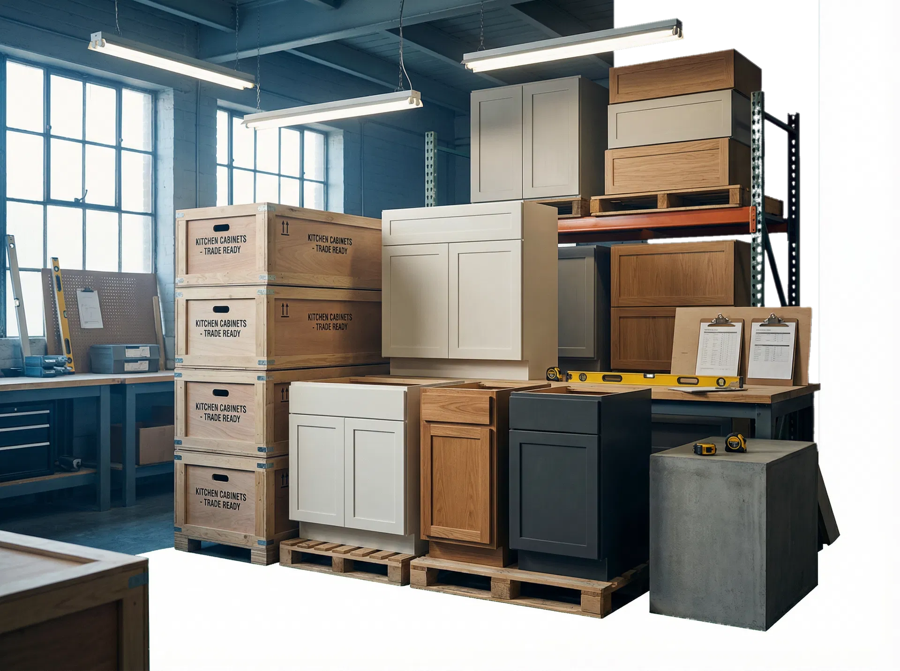
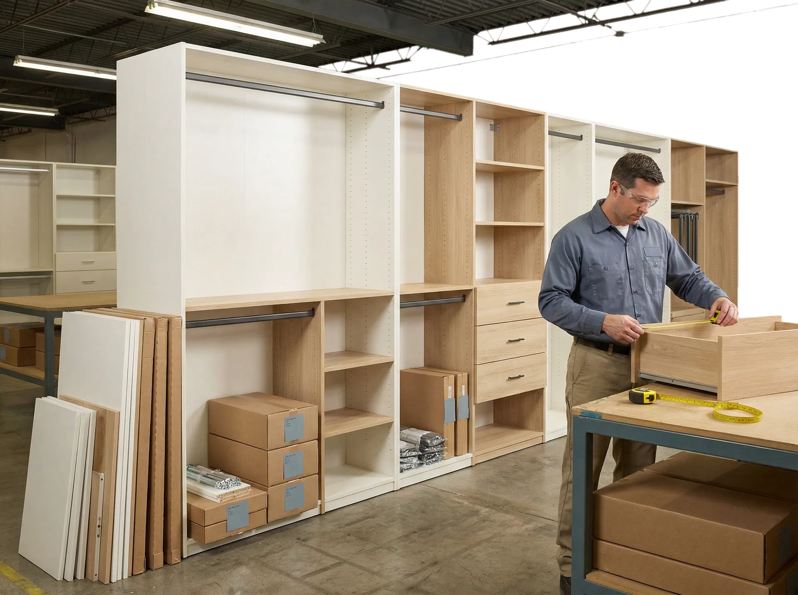
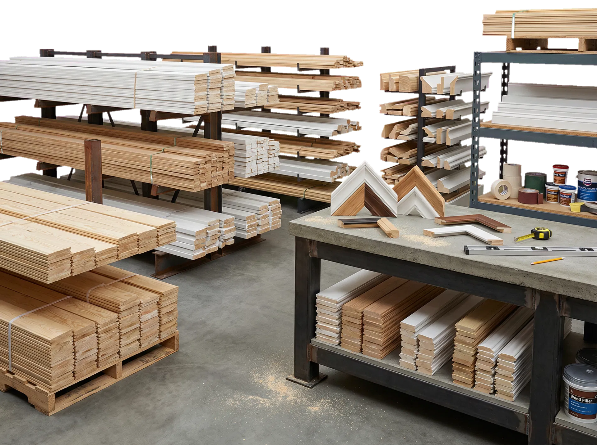

Texas Stock. Fast Supply. Built for Contractors.
Atlas Builder Supply helps Texas contractors, builders, remodelers, and project buyers source kitchen cabinets, closets, and mouldings with local inventory, fast pickup and delivery, and responsive quote support.
categories
positioning
support model
Texas Local Inventory
Built around stocked categories and faster coordination.
Pickup & Delivery
Fulfillment options designed for real project timelines.
Trade-Focused Support
A practical partner for contractors, builders, and repeat buyers.
Fast Quote Response
Clear next steps without retail-style friction.
Wholesale Building Supply for
Fast-Moving Texas Jobs
Atlas Builder Supply focuses on the categories trade buyers need to keep
projects moving.The site is structured for quick scanning, clear category
separation, and immediate paths to stock checks or quote requests.

Kitchen Cabinets
Trade-ready cabinet supply
Dependable cabinet options for builders, remodelers, dealers, and multifamily scopes that need practical availability and a straightforward path to quoting.
Request a Cabinet Quote
Closets & Wardrobes
Project-scale organization systems
Closet and wardrobe solutions configured for residential, builder, and repeat-order work with local support that keeps jobs moving.
Request a Closet Quote
Mouldings & Trim
Finish materials with local support
Trim and moulding supply designed for clean finishes, repeat replenishment, and a more reliable sourcing experience for active work.
Check Trim StockA Better Supply Partner for Trade Buyers
Trade customers do not need unnecessary complexity. They need inventory they can count on, communication that is responsive, and a supplier who understands job timelines.
Local inventory in Texas
Reduce long-lead uncertainty with a supply model centered on local stock and faster coordination.
Fast pickup and delivery
Get materials where they need to go without forcing your team through unnecessary delays.
Built for trade buyers
Work with a supplier that understands contractor schedules, repeat orders, and project urgency.
Straightforward quote support
Move quickly from stock check to pricing conversation and the next practical step.
Trade Service That Matches the Pace of the Job
Atlas Builder Supply is not framed as a casual retail showroom. It is presented as a practical partner for professionals managing schedules, crews, budgets, and repeat material demand.
Contractors & Builders
Atlas Builder Supply is structured for professionals who need clarity, speed, and a local source that respects jobsite reality.
Remodelers & Multifamily Buyers
When scope changes, scheduling pressure, and repeat purchasing all intersect, a responsive supply partner becomes a real advantage.
Dealers & Repeat Buyers
The operating model supports replenishment, practical coordination, and ongoing demand without unnecessary complexity.
Built around repeat work, active schedules, and clearer next steps.
A supply experience that supports replenishment, ongoing scopes, and the practical rhythm of field work.
Shorter decision paths for stock questions, pricing conversations, and fulfillment planning.
Useful for contractors, builders, multifamily teams, dealers, and buyers juggling multiple moving parts.
Local Warehouse Access
with Fast Fulfillment
Options
When buyers need materials quickly, local access matters. The
warehouse section is designed to make pickup, delivery, stock
questions, and service-area trust feel practical rather than vague.
Pickup
For urgent and scheduled needs, warehouse pickup keeps crews moving without unnecessary delay.
Delivery
For qualifying jobs and larger scopes, Atlas can align fulfillment with project logistics.
Availability
The site keeps stock questions close to the surface so buyers can verify the next step faster.
Response
A direct path from inquiry to practical coordination helps reduce friction when timelines matter.
Get Pricing, Check Stock, and Keep
Your Project Moving
The conversion journey is intentionally short. Visitors are guided toward a quote
request, stock check, or direct conversation, with a clear operational rhythm
from inquiry through fulfillment.
Tell us what you need
Share the product category, quantity, timeline, and any project notes that affect fulfillment.
Confirm stock and pricing
Our team helps clarify availability, quote direction, and the best pickup or delivery path for your order.
Pick up or schedule delivery
Move forward with a fulfillment plan that fits the pace of the job rather than slowing it down.
Need Stock for an Upcoming Job?
Talk to Atlas Builder Supply about cabinets, closets, and mouldings for your next project. Whether you need a quick stock check, a project quote, or a dependable local supply partner, the site keeps the path to action visible and direct.
REQUEST A QUOTERequest a Quote
Submit your project details and get a detailed quote within 2 hours.
Request a Quote →Check Availability
Real-time stock levels for cabinets, closets, and mouldings.
Check Availability →